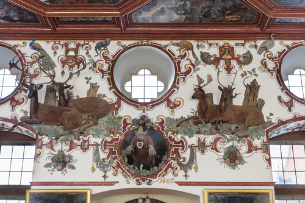

Paintings 2
Get data of text items from wikibase
Wikibase link: https://computational-publishing-service.wikibase.cloud/entity/Q209
Kurator: Seeger, Ulrike
b’<!DOCTYPE html> Bau-, Ausstattungs- und FunktionsgeschichteDie hervorragend erhaltene wandfeste Ausstattung des Gro9fen Saals, der 1639 als 9egro9fer Saahl9c [1] gefwurde und seinen heute gel4ufigen Namen Rittersaal erst im Nachhinein erhielt, datiert aus den Jahren 1601bis 1605. Am Beginn stand den Quellen zufolge der monumentale Saalkamin. Der Vertrag mit dem BildhauerMichael Juncker aus Miltenberg datiert vom 7. September 1601.[2] Im November 1601 wurden mit BalthasarKatzenberger die Deckengem4lde verdingt, der die Arbeiten 13 Monate sp4ter Anno 1602 abschloss.[3] 1603signierte und datierte der Kalkschneider Gerhard Schmidt das Portal an der inneren Ostseite.[4] DieJahreszahl 1605 zusammen mit den Initialen CL fden Kalkschneider Christoph Limmerich der TzumAltan markieren den Abschluss der Arbeiten.[5]
Seit 1710/11 wurde der Saal unter Graf Carl Ludwig behutsam dem barocken Zeitgeschmack angepasst undinhaltlich vom Jagd- zum gr4flichen Rittersaal umgedeutet. Christian Thalwitzer hatte BalthasarKatzenbergers Deckengem4lde 9eim gro9fen Saal [zu] , genau durch[zu]gehen und wo es Schadengenommen, mit allem Fley9f9c auszubessern.[6] Bei dieser Gelegenheit versah er die Gem4lderahmen und diedazwischenliegenden Stuckrippen mit der bis heute groten Marmorierung.[7] An den W4nden wurden dieRoll- und Beschlagwerkkartuschen der Schmuckzone ebenfalls rot marmoriert und an Kamin und Innenportal dierot marmorierten Schattenrahmen hinzugef.
In einem zweiten Schritt wurde der Sockel ringsum mit rot marmorierten Lambris versehen, die ChristianThalwitzer im Rechnungsjahr 1715/16 mit 51 Schloss- und Gartenveduten im Querformat[8] und 27 Orangenb4umenund anderen exotischen Kim Hochformat bemalte. Die 12 ganzfigurigen Portr4ts m4nnlicherVorfahren zum Teil in Ritterr, die dem Rittersaal seinen heutigen Namen gaben, schuf bereits 1710Peter Franz Tassaert aus Rothenburg.[9]
Beschreibung des Raumes
Der 36,4 Meter lange, 11,7 Meter breite und 8,25 Meter hohe Saal[10] wird durch hohe segmentbogenf6rmigeFensternischen gegliedert, deren Achsen von gro9fen Okuli weitergefwerden. Im Gegenzug zu dieserVertikalen beschr4nkt sich der reiche Stuckdekor friesartig auf die obere Wandzone, die oberhalb einesGesimses auf der H6he des oberen Drittels der Fenster beginnt. Dadurch, dass sich die Stuckdekoration in dasobere Drittel der Fensterlaibungen hineinzieht, erwecken sie den Eindruck hoheitsvoll gestelzter B6gen.[11]
An der Westwand, neben der im ersten Joch der Hofseite der Saal die Wendeltreppe betreten wird, erhebtsich ein monumentaler Kamin. Mit Kamin6ffnung, Attikafeld und rundbogigem Auszug umfasst er drei Zonen, vondenen Attika und Auszug in der H6he der stuckierten Wandzone des Saals entsprechen. An der Ostwand, wo manden Saal Richtung Tafelstube verl4sst, befindet sich ein pr4chtiges, 1603 datiertes stuckiertes Innenportaldes Kalkschneiders Gerhard Schmidt.[12] Darverl4uft, teilweise hinter dem Attikarelief, eine Emporebeispielsweise fMusiker.
Den Kamin flankieren stuckierte Darstellungen des Grafenpaars Wolfgang II. von Hohenlohe und Magdalena,geborene Prinzessin von Nassau-Katzenelnbogen mit ihrer jeweiligen Ahnenprobe.[13] Dem Graf wurde diezeremoniell h6herrangige Seite heraldisch rechts des Kamins, der Gr4fin die Seite heraldisch links desKamins zugeteilt. Graf und Gr4fin liegen jeweils auf der Seite einander abgewandt und blicken mitaufgestKopf in den Saal. Aus ihnen heraus w4chst in der Art einer Wurzel Jesse die fGenerationen gefAhnenprobe. Der Graf tr4gt eine Rmit Waffenrock und stseinen Ellenbogenauf einen Helm. Die Gr4fin hat zwei Kinder im Arm, von denen das vordere ein Junge ist.
An den beiden L4ngsseiten nimmt die stuckierte Schmuckzone weit vorkragende, gleichfalls stuckierteWandskulpturen wilder Tiere auf. Sie beziehen sich einerseits auf das Programm der Decke, das der h6fischenJagd in all ihren Ausformungen gewidmet ist. Andererseits sind sie auf die Kaminwand ausgerichtet, die mitihren nachstehend zu erl4uternden Bildthemen als Stellvertreter des Grafen, seiner konfessionellenEinstellung und seiner dynastischen Herkunft konzipiert ist. Zusammen mit einer gemalten Darstellung deslyraspielenden Orpheus an der Decke erlauben die Tiere in ihrer Ausrichtung auf den Kamin die Identifikationdes Grafen mit Orpheus als Sinnbild des guten Herrschers. Diese hier erstmals entwickelte Deutung wird untenim Abschnitt 9eProgramm und Synthese der Saalausstattung der Renaissance9c vorgetagen.
Kamin und Innenportal
Der Kamin aus Andernacher Tuffstein von Michael Juncker und seinen S6hnen Hans und Zacharias aus Miltenbergpr4sentiert im Hauptrelief als zentrales Motiv die pers6nliche Devise des Grafen Wolfgang. DieEntschlder im Vertrag vom September 1601 vereinbarten 9eihrer gnaden Diviso9c[14] gelang erst vorwenigen Jahren JKniep.[15] Dargestellt ist ein antikisch gekleideter Krieger, umgeben von den Symbolender Kardinal- und theologischen Tugenden. Die Devise 9eGott gibt Gl9c l4sst den reformatorischen Glaubendes Grafen Wolfgang ebenso erkennen wie die Betonung der Liebe (Herz in der linken Hand des Kriegers) unddes Buches, aus dem die Schlange ihre Weisheit bezieht. Im Sinne der protestantischen Rechtfertigungslehreoblag es nicht dem Klerus, sondern allein Gott, dem Menschen Gnade angedeihen zu lassen.
Als r4umliches Gegenstzum skulptierten Kamin entstand 1603 in einem Paragone der Techniken undMaterialien das monumentale, aus Stuck gefertigte Innenportal an der Ostseite. Sein Aufbau ist wie der Kamindreizonig mit rundbogiger 96ffnung, Attikarelief und Auszug. Der Kalkschneider Gerhard Schmidt, der dasPortal selbstbewusst mit seinen Initialen signiert hat, hat in der Tdes Hauptreliefs mitextrem hinterschnittenen Pferde- und Soldatenleibern den moderater skulptierten Steinkamin anKunstfertigkeit . Einen H6hepunkt der Stuckateurskunst der Zeit bildet der vollplastischgearbeitete heilige Georg auf seinem zum Sprung den Drachen ansetzenden Pferd.
Das Portal ist inhaltlich auf den 4ltesten Sohn des Grafen Wolfgang, Georg Friedrich, zu beziehen, der imRang eines Obristen des Fr4nkischen Reichskreises und auch der kaiserlichen Armee im Langen T(1593) k4mpfte.[16] Als einer seiner gr9ften Erfolge gilt die versuchte Einnahme der Festung Gran(Eszergom) im Jahr 1594, an der er als kaiserlicher Obrist beteiligt war.[17] Die Festung, vor der sich aufdem Relief das Schlachtengetabspielt, stellt in der Tat Eszergom da, was an der H6henlage und derZweiturmfassade der Kathedrale zu erkennen ist.[18] Der das Portal bekr6nende heilige Georg als Drachent6termit Lanze und zugleich Namenspatron des Erbprinzen sowie Patron der Stadtkirche w4re im Sinne desProtestantismus als tugendhafter Bezwinger des B6sen zu deuten.[19] Mit der Thematik des Langen Tbereitete das Portal auf die dahinterliegende Tafelstube vor, fderen Decke Balthasar Katzenberger 12gro9fe Belagerungsszenen auf Leinwand malte.
Das Portal von 1603 war aber nicht nur heroisch gestimmt. In den Zwickeln lagern Putti, die als Mahnung andie Endlichkeit des Lebens dem Betrachter ein Stundenglas, eine Sense und einen Schl vielleicht insHimmelreich vor Augen halten.
Das Mobiliar
Die renaissancezeitliche Ausstattung des Saals mit Mobilien geht aus einem 1625 aufgenommenen Inventarhervor.[20] Die als erstes genannten 9eEin und zwanzig Stuck goldt uf Leder tappezerey9c dalsgoldgepr4gte Ledertapeten die Trumeaus zwischen den Fenstern geziert haben. Ledertapeten waren kostbar, wassich in ihrer erstplatzierten Nennung niederschlug.[21] An Stellm6beln beinhaltete der Saal 9eZwo langeTafel9c und 9eEin und dreissig von goldt uff Lederne Sessel9c. Die W4nde schmzus4tzlich zu denLedertapeten 9eSechzehn gemahlte Tafeln9c, also im Sujet nicht n4her charakterisierte Gem4lde. Die Beleuchtungerfolgte 9eAcht gro9fe hLichter, gemahlt9c.
Vier Gem4lde wurden zus4tzlich zu den sechzehn aufgef, da sie vermutlich im Vorg4ngerinventar des GrafenWolfgang, das dem Inventar als Vorlage diente, noch nicht enthalten waren. Sie stellten 9eKaiser Matthie undder Kayserin / Item Meines Gnd. Herrn und gnl. Frawen Abcontrafehung9c dar. Kaiser Matthias regierte in denJahren 1612, seine Gemahlin Anna von 96sterreich-Tirol starb 1618. Die Gem4lde stammten demnach aus derZeit des Grafen Georg Friedrich von Hohenlohe-Weikersheim, der mit Eva von Waldstein verheiratet war.
[1] HZAN La 130B, Schadensinventar von 1639. Die Kenntnis und die Transkription dieser Archivalie verdankt die AutorinFrieder Leipold.
[2] Der erhaltene Vertrag (HZAN We 50 D6) in Transkription bei Freeden, Kamin, 1950, S. 144. Bezahltwurde Juncker im Oktober 1602.
[3] Poser, Deckenbilder, 1980, S. 160.
[4] Merten, Weikersheim, o. J., S. 44. Dr6s, Inschriften Mergentheim, 2002, S. 244. Zum Oeuvre und Lebenswegdes Kalkschneiders Gerhard Schmidt: Kreder, Hellenstein, 2005/2006; Rinn-Kupka, Stuck, 2018, S. 126;Lange, 9awelsche Kamin, 2019.
[5] Merten, Weikersheim, o. J., S. 44. Dr6s, Inschriften Mergentheim, 2002, S. 254.
[6] Fandrey, Weikersheim, 2010, S. 55.
[7] Dieser Befund kam bei der Restaurierung der Jahre 1995 zutage. Fzahlreiche Informationen und die9cbermittlung des Abschlussberichts vom 05.03.1998 dankt die Autorin Herrn Dipl.-Ing. Erik Reinhold,Staatliches Hochbauamt Heilbronn.
[8] Die Vedute des Carlsberg bei Weikersheim kam erst 1747 im Zusammenhang mit der damals aufgestelltenKunstuhr hinzu, doch dsie eine 4ltere Vedute am Fensterpfeiler hinter der Uhr ersetzt haben.
[9] Valentin, Malerische Lebensl4ufe, 2019, Anm. 11. Zu Tassaert liegt ein Lebenslauf mit Werkverzeichnisvor: Schnurrer, Tassaert, 2014.
[10] Die genauen Ma9fe gibt Walther-Gerd Fleck (Weyer, Georg Stegle, 2017, S. 52).
[11] Vgl. dagegen Gebe9fler, Saal S, 1957, S. 49, der die Fensternischen aufgrund ihrerDekoration als Anr4ume empfindet.
[12] Das Portal wird in der Literatur zu Unrecht als Eingangsportal in den Saal beschrieben (Poser,Deckenbilder, 1980, S. 160; Kniep, Gl, 2005, S. 52 und 59; K4pplinger, Jagd, 2011, S. 73). Es ist jedochnach innen gerichtet, falso von innen nach au9fen. Au9ferdem folgt in der WegefeinesRenaissanceschlosses die Tafelstube auf den Rittersaal. Auch der Betrachterstandpunkt der Deckengem4lde istmit dem Rzum Kamin so ausgerichtet, dass man die Bilder vom Kamin kommend, Richtung Tafelstube gehendbewundert.
[13] Zu den Ahnenproben: Dr6s, Inschriften Mergentheim, 2002, S. 255. Au9ferdem Kniep, Gl, 2005, S..
[14] Freeden, Kamin, 1950, S. 144.
[15] Kniep, Gl, 2005, S. 57. WeiterfGedanken und Literatur zur Bildhauerfamilie Junckerliefert: Lange, 9awelsche Kamin, 2019.
[16] Kniep, Gl, 2005, S. 52. Au9ferdem Findbuch HZAN La 130 B (Bestallung zum Obristen desFr4nkischen Reichskreises, 1598) und La 130 B (Teilnahme als kaiserlicher Obrist am Feldzug gegen dieT).
[17] Trentin-Meyer, Georg Friedrich von Hohenlohe, 2019, S. 90. Vgl. Niederkorn, Langer T, 1993, S..
[18] Au9ferdem als Beleg die Darstellung in: Ortelius, Chronologia, 1602, Tf. 9eWahre Contrafactur derBelagerung Gran, sampt der Schlacht so dabei geschehen, den 3. Augusti. Anno 15959c. Ortelius w4hlte fseine Illustration die erfolgreiche Belagerung und Schlacht von 1595. Die Belagerung von 1594 war fdieKaiserlichen noch nicht erfolgreich.
[19] Kniep, Gl, 2005, S. 56.
[20] Auszdes Inventars stellte freundlicherweise Dinah Rottsch4fer der Autorin zur Verf.
[21] Bei dem von K4pplinger, Auf99s Sch6nste, 2019, S. 189 mit Anm. 3 genannten Inventar von 1634 handelt essich um einen Schadensbericht, in dem die Ledertapeten verkals 9etappezereien von gold9c bezeichnetwurden, was K4pplinger in Unkenntnis des Vorg4ngerinventars als textile Wandbespannungen deutete.
’
Get data of image items from wikibase
Wikibase link: https://computational-publishing-service.wikibase.cloud/entity/Q212
Title: Rittersaal & Raum 72 – nach Westen
Year: 2018
Description: Teil von: Schloss Weikersheim SaalbauWolfgang Beringer, Baumeister & Steinmetz - Georg Stegle, Baumeister - Entwurf: Georges Robin, Architekt - Elias Gunzenhäuser, Zimmermann - Weikersheim, Marktplatz 11 - ab 1595

Wikibase link: https://computational-publishing-service.wikibase.cloud/entity/Q213
Title: Löwenpaar – Gesamtansicht
Year: 2018
Description: Gerhardt Schmidt, Bildhauer - Mitarbeit: Christoph Limmerich, Bildhauer - Mitarbeit: Caspar Dieterich, Fassmaler - Weikersheim, Schloss Weikersheim, Rittersaal & Raum 72 - Vollendung: 1605 - 1747

Wikibase link: https://computational-publishing-service.wikibase.cloud/entity/Q214
Title: Bär – Gesamtansicht
Year: 2018
Description: Gerhardt Schmidt, Bildhauer - Mitarbeit: Christoph Limmerich, Bildhauer - Mitarbeit: Caspar Dieterich, Fassmaler - Weikersheim, Schloss Weikersheim, Rittersaal & Raum 72 - Vollendung: 1605 - 1747

Wikibase link: https://computational-publishing-service.wikibase.cloud/entity/Q215
Title: Hirschpaare – Gesamtansicht
Year: 2018
Description: Gerhardt Schmidt, Bildhauer - Mitarbeit: Christoph Limmerich, Bildhauer - Mitarbeit: Caspar Dieterich, Fassmaler - Weikersheim, Schloss Weikersheim, Rittersaal & Raum 72 - Vollendung: 1605 - 1747

Wikibase link: https://computational-publishing-service.wikibase.cloud/entity/Q216
Title: Affe – Gesamtansicht
Year: 2018
Description: Gerhardt Schmidt, Bildhauer - Mitarbeit: Christoph Limmerich, Bildhauer - Mitarbeit: Caspar Dieterich, Fassmaler - Weikersheim, Schloss Weikersheim, Rittersaal & Raum 72 - Vollendung: 1605 - 1747

Wikibase link: https://computational-publishing-service.wikibase.cloud/entity/Q200
Title: Rittersaal & Raum 72 – nach Osten
Year: 2018-01-01T00:00:00Z
Description: Teil von: Schloss Weikersheim Saalbau Wolfgang Beringer, Baumeister & Steinmetz - Georg Stegle, Baumeister - Entwurf: Georges Robin, Architekt - Elias Gunzenhäuser, Zimmermann - Weikersheim, Marktplatz 11 - ab 1595

Wikibase link: https://computational-publishing-service.wikibase.cloud/entity/Q211
Title: Rittersaal & Raum 72 – nach Osten
Year: 2018-01-01T00:00:00Z
Description: Teil von: Schloss Weikersheim SaalbauWolfgang Beringer, Baumeister & Steinmetz - Georg Stegle, Baumeister - Entwurf: Georges Robin, Architekt - Elias Gunzenhäuser, Zimmermann - Weikersheim, Marktplatz 11 - ab 1595

Wikibase link: https://computational-publishing-service.wikibase.cloud/entity/Q212
Title: Rittersaal & Raum 72 – nach Westen
Year: 2018-01-01T00:00:00Z
Description: Teil von: Schloss Weikersheim SaalbauWolfgang Beringer, Baumeister & Steinmetz - Georg Stegle, Baumeister - Entwurf: Georges Robin, Architekt - Elias Gunzenhäuser, Zimmermann - Weikersheim, Marktplatz 11 - ab 1595

Wikibase link: https://computational-publishing-service.wikibase.cloud/entity/Q213
Title: Löwenpaar – Gesamtansicht
Year: 2018-01-01T00:00:00Z
Description: Gerhardt Schmidt, Bildhauer - Mitarbeit: Christoph Limmerich, Bildhauer - Mitarbeit: Caspar Dieterich, Fassmaler - Weikersheim, Schloss Weikersheim, Rittersaal & Raum 72 - Vollendung: 1605 - 1747

Wikibase link: https://computational-publishing-service.wikibase.cloud/entity/Q214
Title: Bär – Gesamtansicht
Year: 2018-01-01T00:00:00Z
Description: Gerhardt Schmidt, Bildhauer - Mitarbeit: Christoph Limmerich, Bildhauer - Mitarbeit: Caspar Dieterich, Fassmaler - Weikersheim, Schloss Weikersheim, Rittersaal & Raum 72 - Vollendung: 1605 - 1747

Wikibase link: https://computational-publishing-service.wikibase.cloud/entity/Q215
Title: Hirschpaare – Gesamtansicht
Year: 2018-01-01T00:00:00Z
Description: Gerhardt Schmidt, Bildhauer - Mitarbeit: Christoph Limmerich, Bildhauer - Mitarbeit: Caspar Dieterich, Fassmaler - Weikersheim, Schloss Weikersheim, Rittersaal & Raum 72 - Vollendung: 1605 - 1747

Wikibase link: https://computational-publishing-service.wikibase.cloud/entity/Q216
Title: Affe – Gesamtansicht
Year: 2018-01-01T00:00:00Z
Description: Gerhardt Schmidt, Bildhauer - Mitarbeit: Christoph Limmerich, Bildhauer - Mitarbeit: Caspar Dieterich, Fassmaler - Weikersheim, Schloss Weikersheim, Rittersaal & Raum 72 - Vollendung: 1605 - 1747

Wikibase link: https://computational-publishing-service.wikibase.cloud/entity/Q200
Title: Rittersaal & Raum 72 – nach Osten
Year: 2018
Description: Teil von: Schloss Weikersheim Saalbau Wolfgang Beringer, Baumeister & Steinmetz - Georg Stegle, Baumeister - Entwurf: Georges Robin, Architekt - Elias Gunzenhäuser, Zimmermann - Weikersheim, Marktplatz 11 - ab 1595

Wikibase link: https://computational-publishing-service.wikibase.cloud/entity/Q211
Title: Rittersaal & Raum 72 – nach Osten
Year: 2018
Description: Teil von: Schloss Weikersheim SaalbauWolfgang Beringer, Baumeister & Steinmetz - Georg Stegle, Baumeister - Entwurf: Georges Robin, Architekt - Elias Gunzenhäuser, Zimmermann - Weikersheim, Marktplatz 11 - ab 1595